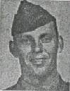

Corp Merrill C Quick: Departed the USA with Company C. He was KIA 6/17/44 on Saipan. At the time of his death he was a Fire Group Leader, 1st Squad, 1st Platoon.
The following was extracted from Orvel Johnson's Memories:
MERRILL C. QUICK, Corporal USMC, KIA 6/17/44
Fire Group Leader, 1st Squad, 1st Platoon
C Company, 1st Battalion, 23rd Regiment, 4th Marine Division
About 0900 on a ridge that had been designated as our initial or Phase Line 01, the 23rd Regiment was finalizing the morning's plan to break out of our beachhead on the Island of Saipan, Marianas. The devastating Japanese shelling of our invasion assault forces and supplies was at last quieted down to a tolerable level, enabling our forces to consolidate, reorganize and resupply our troops to resume the offensive.
At this point in time, we had not visualized the terrain beyond the ridge we now occupied. Merrill decided to take a careful peek from concealment of a brush line along the military crest of the ridge, feeling quite sure that no Japanese forward observers would see him crawl through vines and weeds to his observation point. In the days following our landing on June 15, 1944, a Japanese artillery observation post was located in the bombed out and shelled remains of the industrial chimney of the sugar mill that was on the beach just NE of our landing beach and the city of Charan-Kanoa. The Japanese artillery was right on target when supplies were unloaded and where any congregation of our troops gathered in areas that could not be observed from Mt. Tapotchau. Its been said by some that on about D plus 2, the artillery observer post in the chimney was destroyed. The sugar mill chimney over looked our position on the ridge that morning.
Regardless, if the observer in the chimney reported Merrill's position or not, a Japanese sniper had Merrill's position zeroed in. Merrill slithered through the ground cover to the bush he planned to position himself behind for concealment and observation through the branches. At the instant that he raised his field glass to his head, a Japanese sniper had the bush in the sight glass of his scope. Merrill never knew what hit him and he could not have suffered for his life was snuffed out at the very instant he lifted his head.
Orvel Johnson records the instant of Merrill's death. I was the BAR in Merrill's Fire Group and the subsequent successor to lead the group. Upon my return to United States soil and for several years attempted to search for the family of Merrill C. Quick. It has been my wish to meet his wife, his parents and family. So far my efforts have failed. Hopefully a family member, perhaps a descendent, seeking to learn of him will find this memorial. To the family of Merrill C. Quick, know this, Merrill was a proud American, loyal to his country, the Marine Corps and to his family. He paid the supreme price, giving his life that we remain free. I am proud to have known him for a short and terrible time. May he rest in peace?
Created by Rowland Lewis
Last Modified 09/19/99